操作LoopLive にアクセスし、アカウント作成 タブを選択

画像未配置
guide1-01-access-signup.png
アカウント作成方法とリアルタイム加工の操作手順です。
目標: ユーザーが自身のアカウントを作成できる。
操作LoopLive にアクセスし、アカウント作成 タブを選択
画像未配置
guide1-01-access-signup.png
操作利用規約を最下部までスクロール
結果確認同意する が有効化される

画像未配置
guide1-02-terms-scroll.png
操作同意する を押す
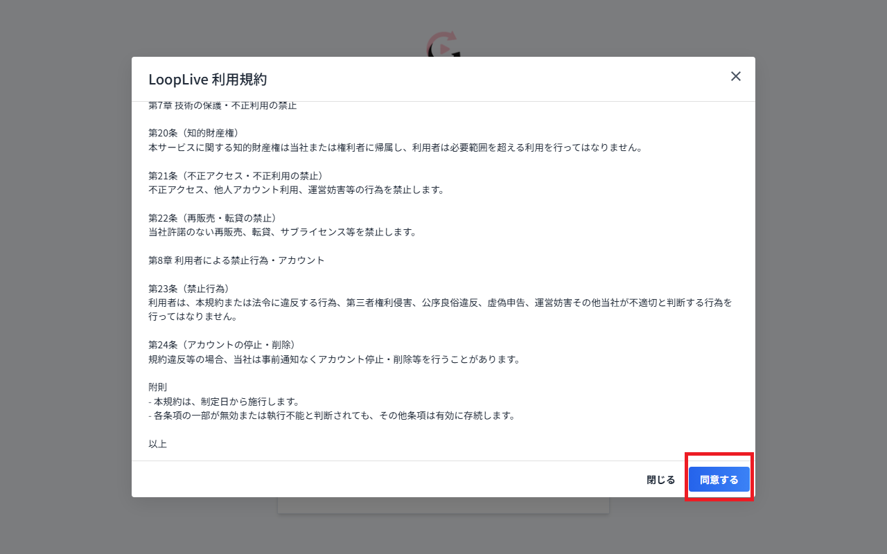
画像未配置
guide1-03-agree-terms.png
操作Email と パスワード を入力

画像未配置
guide1-04-email-password.png
操作アカウントを作る を押す

画像未配置
guide1-05-create-account.png
アカウントを作成しただけでは使用可能になりません。管理者にアカウントの有効化（権限設定）を依頼してください。
目標: 加工開始 から 加工停止 まで実行できる。必要に応じて 加工後の映像を見る で出力を確認できる。
スマホ版ではリアルタイム加工を利用することはできません。
操作加工を始める を押す
結果確認サーバー管理 画面が表示される

画像未配置
guide2-01-start-streaming.png
操作対象サーバーで 入室 を押す
結果確認StreamingPage（リアルタイム加工）が開く
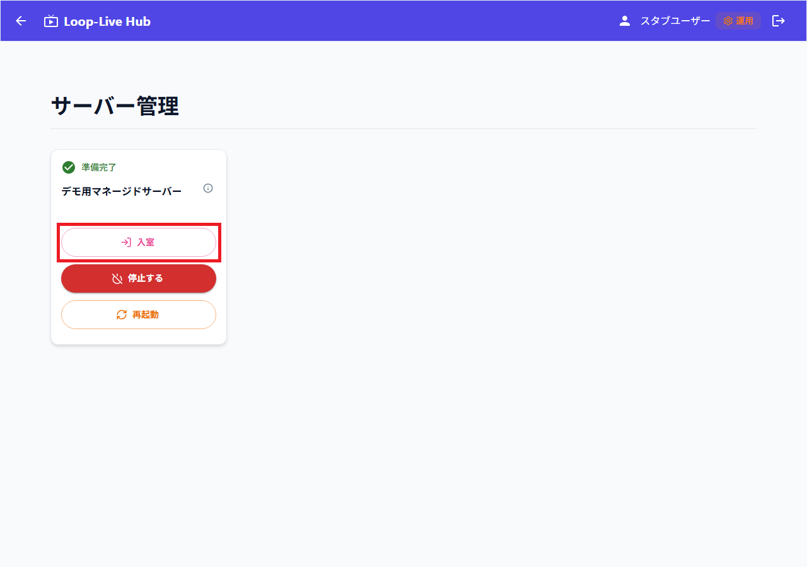
画像未配置
guide2-02-enter-room.png
操作サーバー状態が OFF / 起動失敗 のとき 起動する を押す
結果確認確認ダイアログが表示される
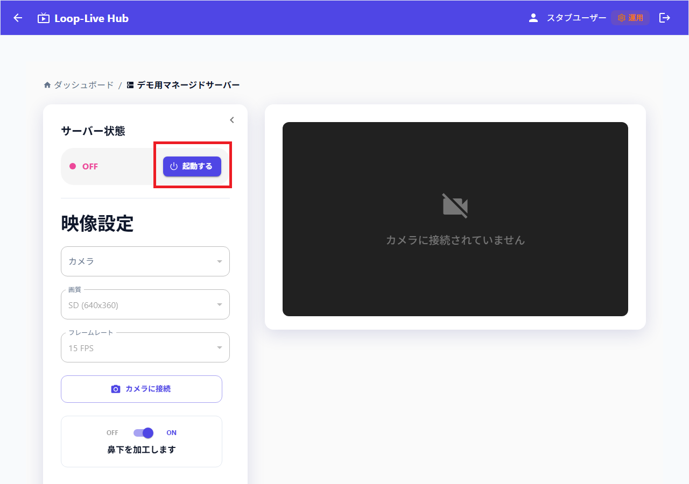
画像未配置
guide2-03-start-server.png
操作はい を押す
結果確認サーバーを起動しています。このままお待ちください... が表示される
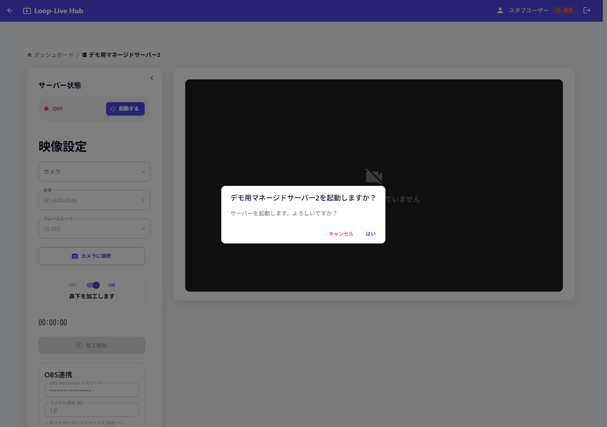
画像未配置
guide2-04-confirm-start.png
操作サーバー状態が 準備完了 になるまで待つ
結果確認カメラに接続 が押せる状態になる
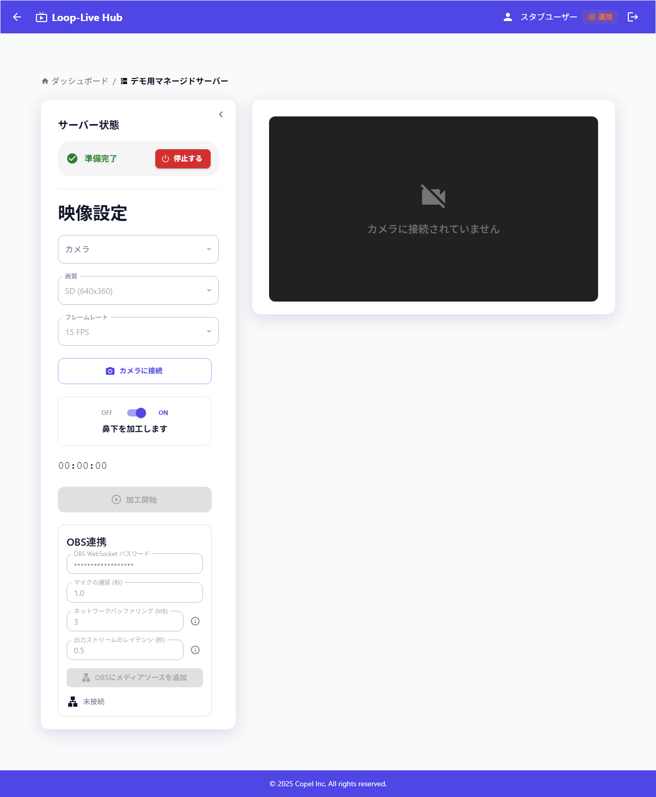
画像未配置
guide2-05-server-ready.png
操作カメラに接続 を押す
結果確認プレビューにカメラ映像が表示される
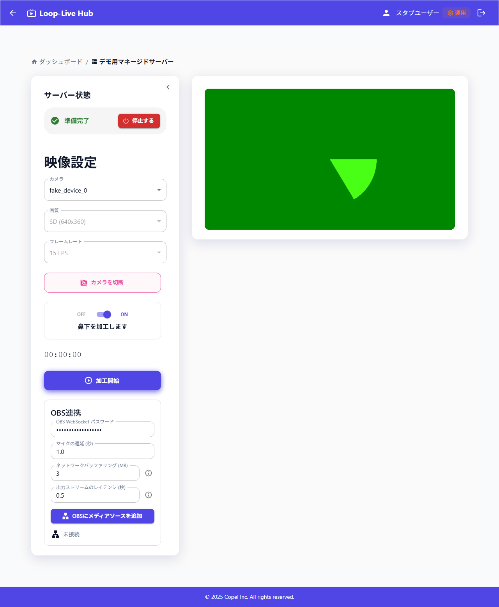
画像未配置
guide2-06-camera-connect.png
操作必要に応じて カメラ を選び直す
結果確認映像が切り替わる
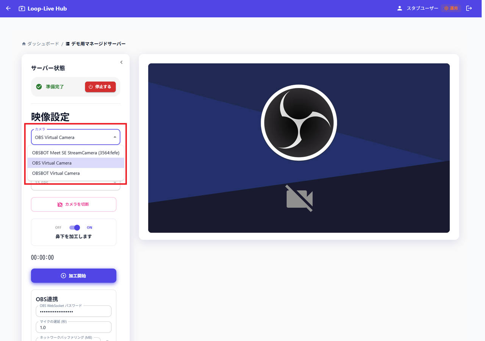
画像未配置
guide2-07-camera-select.png
操作必要に応じて鼻下加工を切り替える
結果確認表示が切り替わる
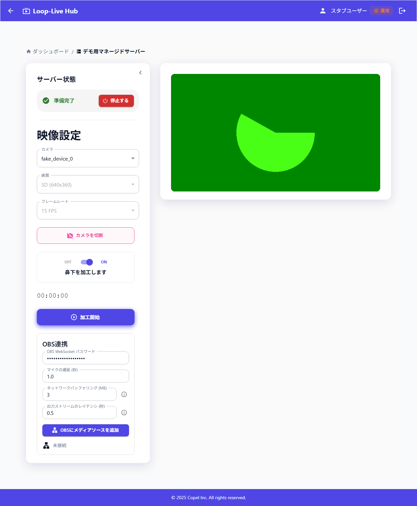
画像未配置
guide2-08-nose-toggle.png
OBS Studio を起動し、OBS 側で WebSocket サーバーを有効にし、サーバーパスワード を発行してコピーします。
操作OBS WebSocketパスワード 欄に、手順9で発行したサーバーパスワードを入力する
結果確認LoopLive→OBS Studio へ映像を連携するために必要なパスワードが設定される
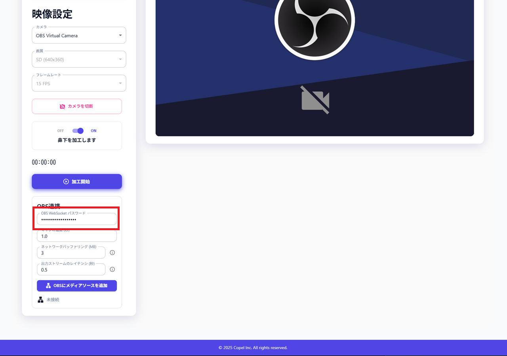
画像未配置
guide2-10-obs-ws-password.png
操作OBS連携 欄の設定を必要に応じて変更する（マイクの遅延、ネットワークバッファリング、出力ストリームのレイテンシなど）
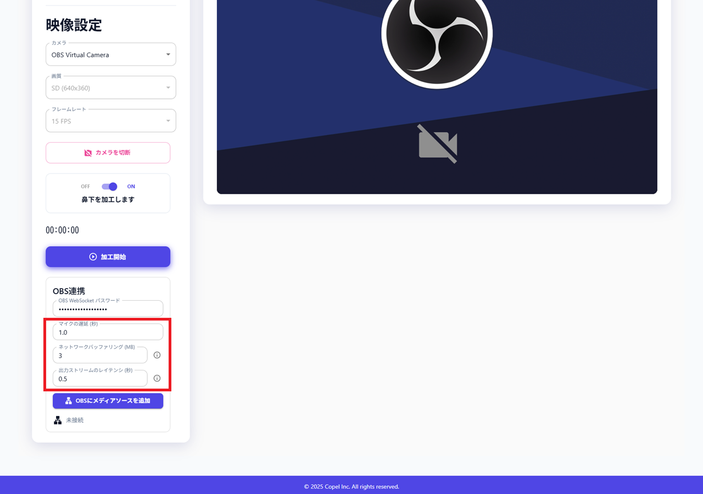
画像未配置
guide2-11-obs-link-settings.png
操作OBSにメディアソースを追加 を押し、OBS 側の ソース 欄に LoopLiveからの映像 が追加されたことを確認する
結果確認OBS Studio が起動していることが必須。パスワードのダイアログが出たら はい を選んで保存しておくと便利
| エラー文 | 想定される原因 | どうすればいいか |
|---|---|---|
| 再生用のURLが指定されていません。 | 配信準備が済む前に操作した、サーバー側で URL が未設定など。 | サーバーが起動してしばらくしてから操作する。 |
| OBSからシーンリストを取得できませんでした。 | OBS にシーンが1つも設定されていない。 | OBS でシーンを少なくとも1つ作成してから再試行する。 |
| 最後のシーンの名前が取得できませんでした。 | まれに起こる。 | まれなケース。OBS を再起動し、再度同じ手順を実施する。 |
| OBSのWebSocketパスワードが正しくありません。 | OBS 側の WebSocket 認証と、LoopLive に入力したパスワードが一致しない。 | OBS の「設定」→「WebSocket サーバー」のサーバーパスワードと、入力した OBS WebSocketパスワード を一致させる。 |
| OBS WebSocketパスワードは必須です。 | パスワードが記入されていない。 | LoopLive にパスワードを入力する。 |
| OBSがリクエストを無効と判断しました。OBS側の環境に問題がある可能性があります。 | OBS側の不具合。 | OBS のバージョンを確認・更新する。OBS を再起動し、プラグインの影響を疑う。 |
| OBSに接続できません。OBSが起動しているか、WebSocketサーバー設定を確認してください。 | OBSに接続失敗している。 | 同一 PC で OBS Studio を起動する。OBS の WebSocket サーバーを有効にし、既定のポート 4455 で待ち受けているか確認する。ファイアウォールやセキュリティソフトの設定が妨害していないかを確認する。ポート 4455 を別アプリが使用していないかを確認する。 |
| 予期せぬエラーが発生しました。詳細はコンソールを確認してください。 | 上記の個別分岐に当てはまらない例外。 | 開発元へ相談する。 |
補足（エラーではないが表示されうるメッセージ）
| 表示 | 想定される原因 | どうすればいいか |
|---|---|---|
| ソースは設定しましたが、マイクの遅延設定には失敗しました。 | 映像の受信設定は成功しているが、 マイク が OBS に存在しないため設定に失敗した。 | OBS のマイクの名を マイク に修正し再度ボタンを押す。 |
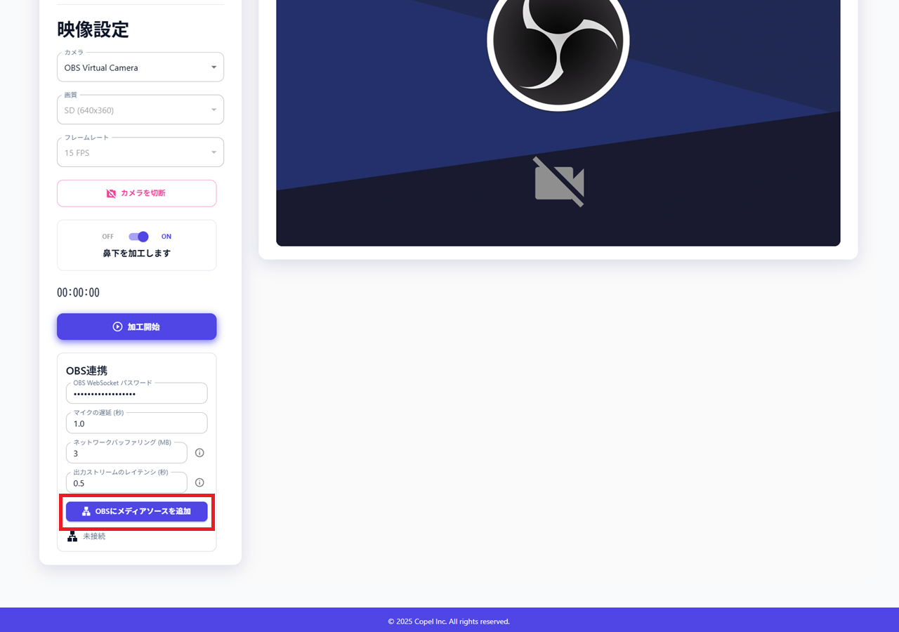
画像未配置
guide2-12-obs-add-media-source.png
操作加工開始 を押す
結果確認確認ダイアログが表示される
ボタンが押せない・灰色のまま
| 状況 | 想定される原因 | どうすればいいか |
|---|---|---|
| 加工開始 が押せない | カメラがまだ接続されていない。 | 手順6まで戻り、カメラに接続 からプレビューが出る状態にする。 |
| 同上 | サーバーの状態が「準備完了」ではない（起動処理中・準備中・停止処理中・オフなど）。 | 手順3〜5のとおり、起動が完了して 準備完了 になるまで待つ。 |
メッセージが出る場合（通知など）
| 目安となる表示 | 想定される原因 | どうすればいいか |
|---|---|---|
| カメラまたはサーバー接続情報がありません。 | カメラ映像の取得が無い、またはサーバー側の接続先情報がまだ画面に揃っていない。 | カメラに接続 をやり直す。ページを再読み込みし、準備完了 を確認してから再度 加工開始 する。 |
| サーバーへの接続に失敗しました（のあとに英語や数字が続くことがある） | ブラウザからサーバーへの最初の接続確立に失敗した。 | 通信環境を確認する。時間を置いて再試行する。VPN・プロキシ・企業ネットワークの制限も疑う。 |
| サーバーとの接続が確立しました。加工の処理を開始します…（のち長く待つ） | 接続はできたが、サーバー側で加工用の映像出力の準備に時間がかかっている。 | 数分待つことがある。エラーではない場合が多い。 |
| 加工処理中… ／ 接続中… が長い | 上記の準備待ち、または通信が遅い。 | 待つ。5分近く待っても進まない場合は、下のタイムアウトや接続切れを参照。 |
| 加工処理がタイムアウトしました（300秒）。 | 約5分以内に加工の準備完了にならなかった。 | 加工停止 でいったん止め、ネットワークとサーバー状態を確認してからやり直す。改善しない場合はサービス提供元に相談する。 |
| サーバー状態の確認に失敗しました。 | 加工準備が整ったかどうかの確認の通信に失敗した。 | 通信を確認し、ページを再読み込みしてからやり直す。 |
| サーバーとの接続が切れました。 | 通信が途中で切断された。 | ネットワークを確認し、あらためて 加工開始 から試す。 |
| サーバー情報の更新に失敗しました。 | 画面の裏側でサーバー情報の取得に失敗した（加工中以外でも出うる）。 | 通信を確認。繰り返す場合はページを再読み込み。 |
エラーが出なくても起きうること
| 状況 | 想定される原因 | どうすればいいか |
|---|---|---|
| はい を押したあと 準備完了 のままに見える／すぐには進まない | 表示の更新タイミングや、サーバー側の処理待ち。 | しばらく待つ。手順書「補足（所要時間）」も参照。 |
| 加工処理中… のあとも OBS にすぐ映らない | 本画面で加工が始まっても、OBS 側に映像が届くまで追加で時間がかかる。 | 数十秒〜1分程度待つ（手順15の説明どおり）。 |

画像未配置
guide2-13-process-start.png
操作はい を押す
結果確認加工処理中…（または一時的に 接続中...）になる
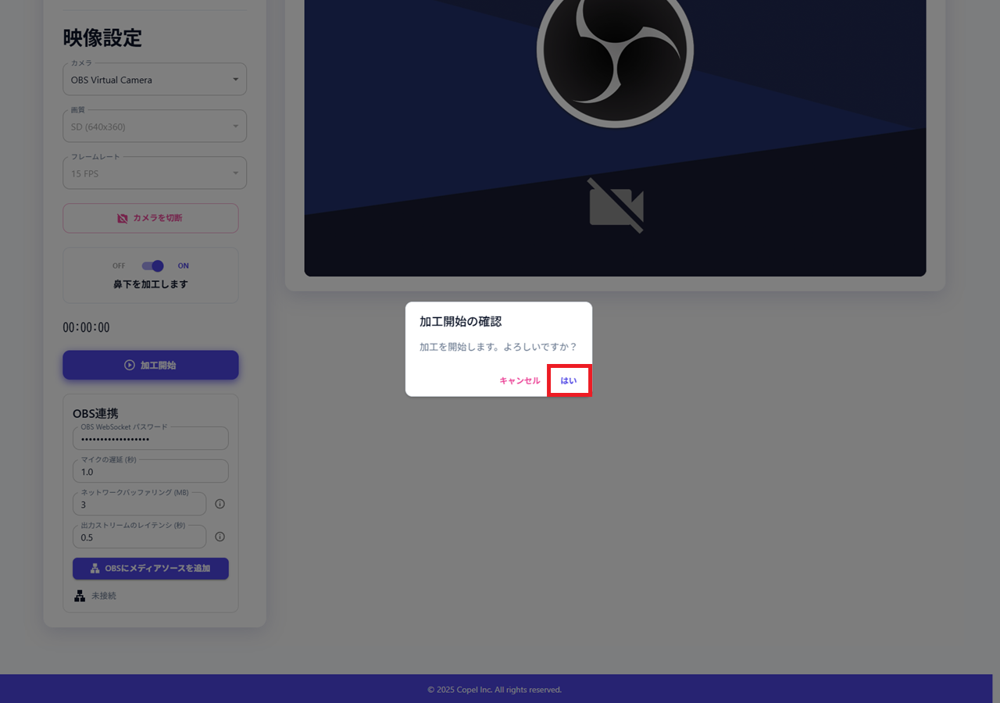
画像未配置
guide2-14-confirm-process.png
操作使用中 が表示されれば成功
結果確認加工開始後、およそ数十秒〜1分程度で OBS Studio にも映像が映る
画像未配置
guide2-15-processing.png
操作必要に応じて 加工後の映像を見る を押す
結果確認別タブで加工映像が表示される
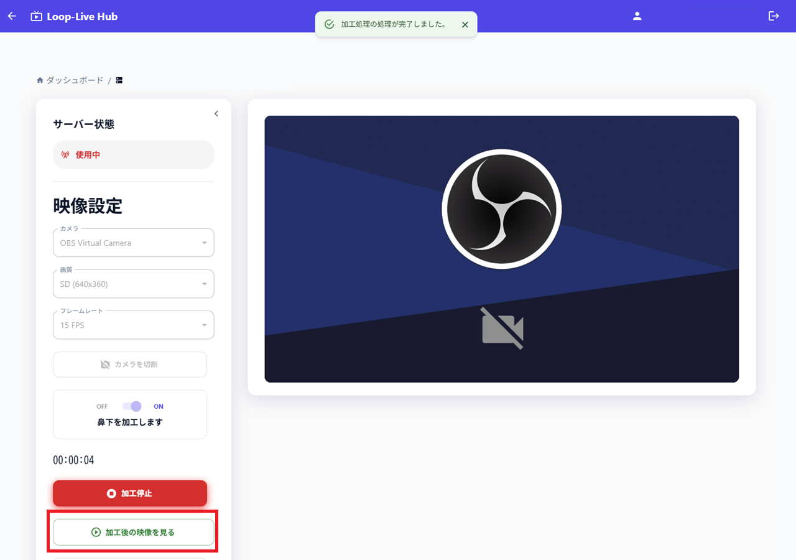
画像未配置
guide2-16-preview-output.png
操作加工を終了するときは 加工停止 を押す
画像未配置
guide2-17-process-stop.png
操作停止する を押す
結果確認数分〜10分程度で OFF に戻る。終了時に 停止する を押さずに閉じるとサーバー稼働が継続し利用料が発生する可能性がある。必ず停止完了（OFF）まで確認する
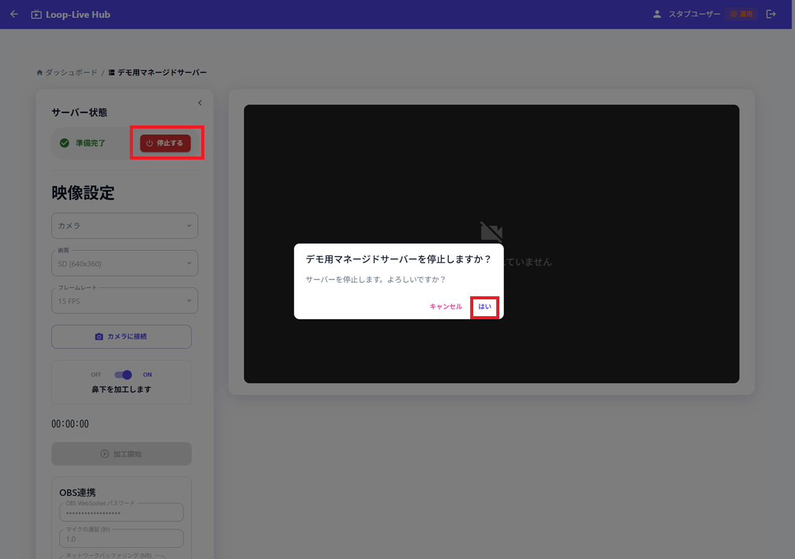
画像未配置
guide2-18-stop-server.png
加工停止 のあとサーバー停止を行った場合、停止処理中 から OFF になるまで数分、長いと10分程度かかることがあります。
停止せずに画面を閉じるとサーバー稼働が継続し、サービス利用料が発生する可能性があります。
| 表示の目安 | 内部名（実装） | ルート |
|---|---|---|
| ポータル（トップ） | PortalPage | / |
| サーバー管理 | InstanceDashboard | /dashboard |
| リアルタイム加工 | StreamingPage | /streaming/:instanceId |
| 写真フェイススワップ | PhotoFaceSwapPage | /photo-face-swap |
| 利用料金 | UsageBillingPage | /usage-billing |
| ユーザー管理 | UserManagementPage | /users |
| プロフィール | ProfilePage | /profile |
起動処理中 / 準備中 / 準備完了 / 使用中 / 停止処理中 / OFF / 起動失敗